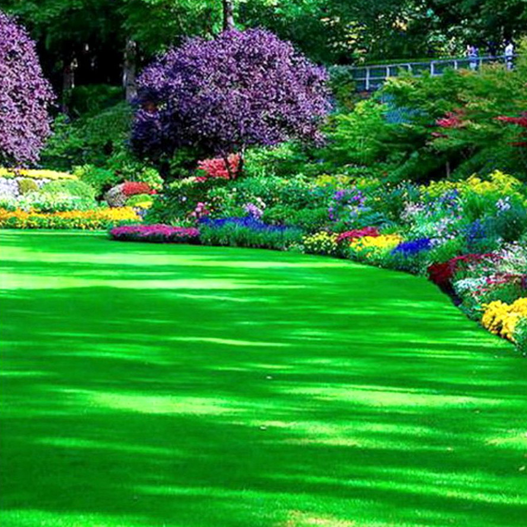
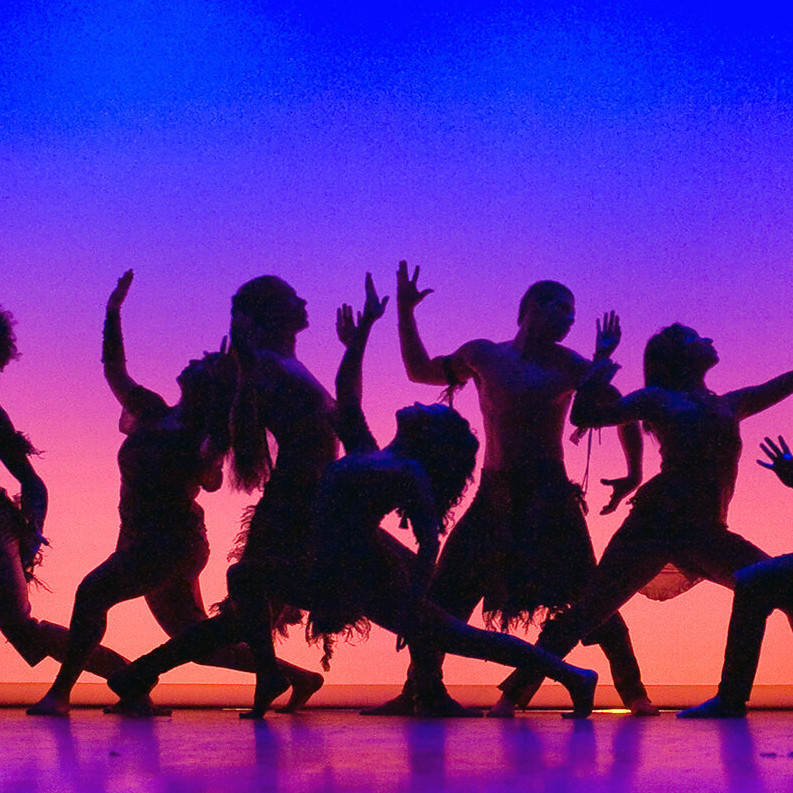
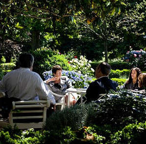

Welcome to The Garden!

What is The Garden?
We live together as one earth. Not separately within an ecosystem, but as an integral element of that ecosystem. Unsustainable processes are resulting in crises and breakdowns, where not only our quality of life, but indeed our survival, demand wise collective action. So where are we to go, how are we to get there? This is not a mere problem of engineering, management, economics or politics. It is all of those things and more. Viewed as a problem to be solved, it seems intractable, perhaps insoluble. Like a Zen koan, it has no solution from our current level of understanding. We must go beyond, to something new, and we must do this collectively. This is not a rational process, although rationality, science and technology will play a crucial role. It requires collective mind, and collective action. Ultimately it requires the power of Love, to not only connect us, but to inspire us in understanding ourselves, each other, and our collective situation. Art, play, and deep compassionate communication, are crucial elements of this process, to unleash the creativity necessary to find something new, and to connect us across our differences

Why was The Garden created?
The Garden was created as a way to bring people and organizations together to work, play and dance. Some of its activities are in the form of service or creative projects, some are classes or workshops, some are performances, and some are open space mixers with no agenda.

How will we do it?
Concretely, we will create a shared real & virtual space and resource center, the Garden, for supporting the production of and participation in creative programs: events (e.g. meetups), performances, workshops, bootcamps, hackathons, games, and ongoing activities such as classes, and projects. Physical spaces - performance venues, museums, stores, cafes, school classrooms, workspaces, etc. will provide access to Garden programs and production resources, but those will also be available through the web and through immersive channels like gaming platforms. Although some programs will be performance based, providing mind opening inspiration and illumination, many programs will be oriented around full social participation, with the aim of nurturing community projects, or birthing new ones, to address problems. The production resources will include schemas and methodology for how artists work together with experts and stakeholders to produce programs that are powerful for exploring issues, and organizing around actions.: